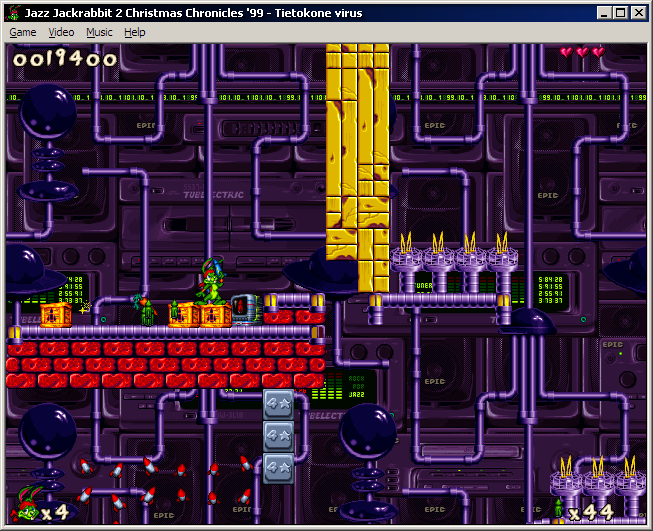

Jazz Jackrabbit 2 home cooked levels from 2002
Forest
This is the first complete level I've made for any game. By the time I started building this I was eight years old, and not knowing English very well I discovered most features of Jazz Creation Station by trial and error.
A decade after I'm still quite happy with it, even though there are some filler parts where I couldn't think of anything interesting to put in. For some reason I had this thought that the whole rectangular area of a level should be used, so I often zoomed out to see where the biggest empty areas are and tried to invent something there.
Computer virus
Tubelectric theme was one of my favorites because of the many types of ground tiles and the music, so of course I needed to do a level with it. At this point I started adding really "clever" obstacles on the main path of a level, basically requiring the player to examine the level in JCS or trying everything possible on every tile nearby. This level I didn't finish because new event tiles stopped functioning after the level had grown, and at the time I couldn't figure out why. I think there was some hardcoded limit on how many events a level could have and I had crossed it with this huge level.
Looking at this level makes me feel like creating a new one with better, more indoor-like structure, and with more tubes! There could also be a puzzle making use of the pinball stuff...

Jungle
I think this was one of my last levels I made to Jazz 2. It's complete, although nobody, even me, has ever completed it without using cheats; it's a bit hard. I guess it was fun to make the player frustrated, because there are just too many small flying enemies and not enough checkpoints.
Composition and structure-wise this might be my best level though, and there are many puzzly situations I like. I think I forgot to add parallaxing elements to the background.